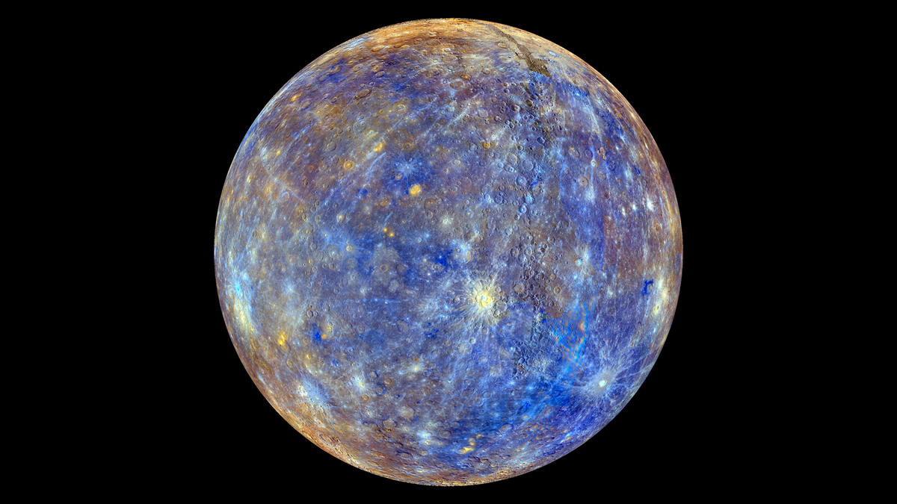
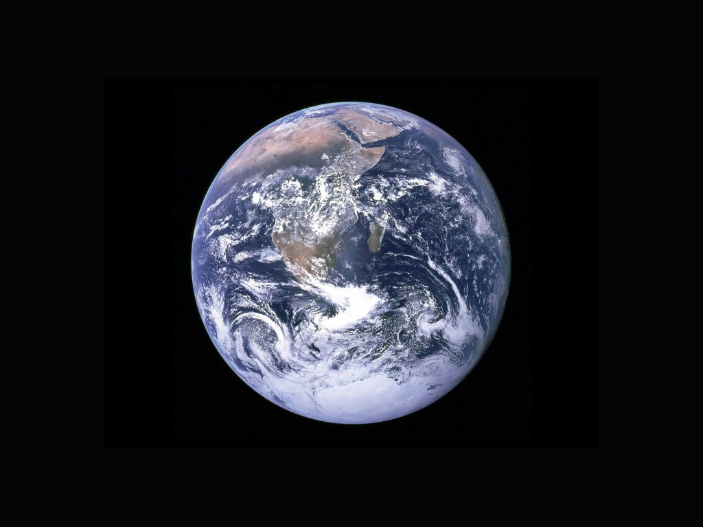
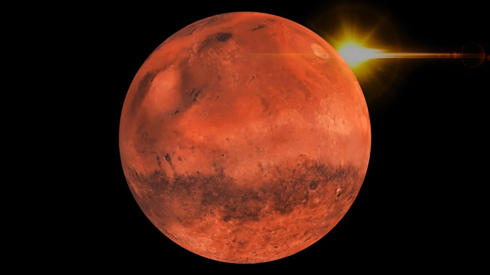
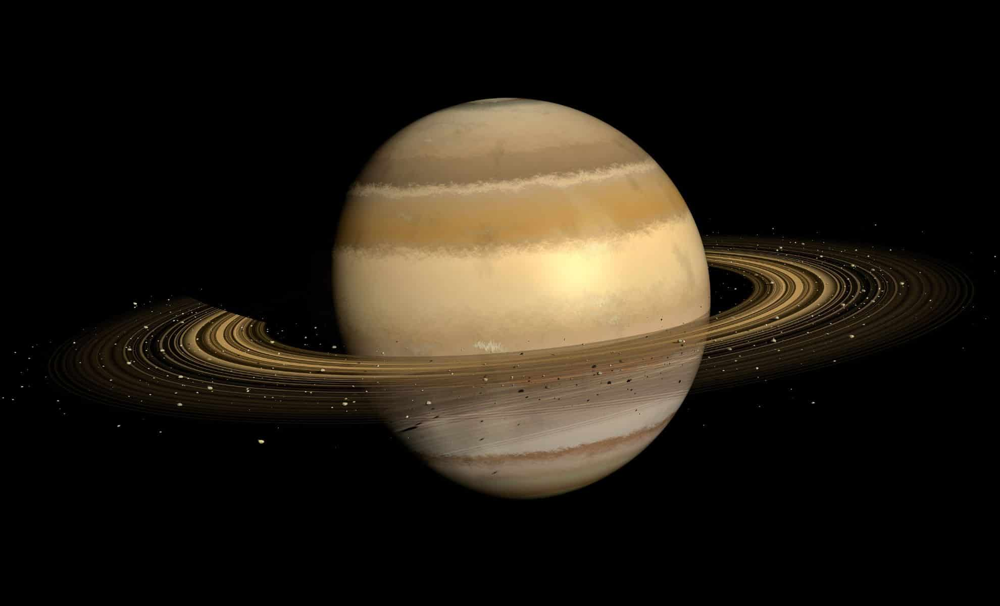
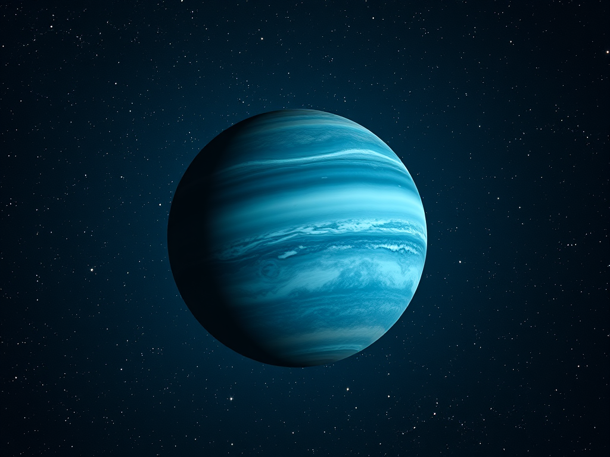
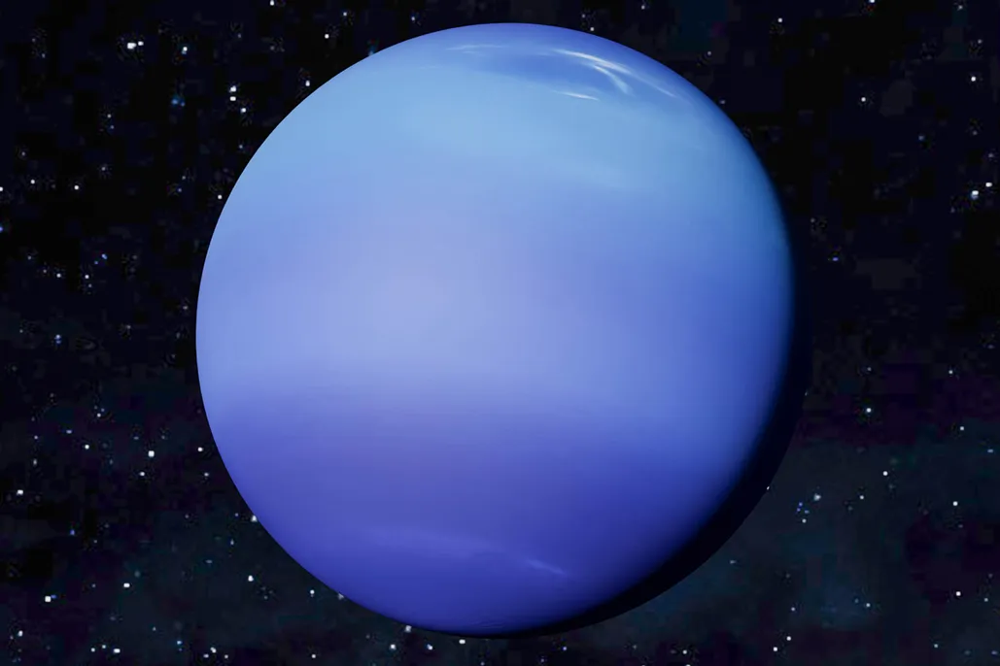

Discover the Planet in Solar System
The Solar System is a vast and fascinating part of our universe,
home to eight remarkable planets: Mercury, Venus, Earth, Mars, Jupiter, Saturn, Uranus, and Neptune.
Spinning around the blazing Sun, each of these worlds has its own size, color, atmosphere, and mystery.
Together, they form a breathtaking symphony of motion and wonder in the cosmic dance of space.
Let's explore the planets in the solar system
Have you ever wondered what it’s like to stand on Mars or fly through Saturn’s rings?
Let’s begin an incredible journey through the eight planets of our solar system — each one more fascinating than the last.
The Mercury Planet
First is Mercury, the smallest planet and the closest to the Sun.
The Venus Planet

Second is Venus, known for its thick clouds and extreme surface heat.
The Earth Planet
Third comes Earth, our home and the only planet known to support life.
The Mars Planet
Fourth is Mars, the red planet, famous for its dusty surface and giant volcano.
The Jupiter Planet

Fifth is Jupiter, the largest planet with a powerful Great Red Spot storm.
The Saturn Planet
Sixth follows Saturn, easily recognized by its magnificent ring system.
The Uranus Planet
Seventh is Uranus, an icy giant that rotates on its side.
The Neptune Planet
Eighth and farthest is Neptune, a cold, windy planet with deep blue colors.